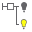
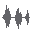

Nodes
This Node overview contains a full list of all Ventuz Nodes.
Table of Contents
Animation
| KeyframeAnimation | This node contains the animation curves and the animation logic for all bound properties. | |
|---|---|---|
| Animation Group | Groups different Keyframe Animations to be concurrent in the Template Engine. | |
| Simple Control | This node offers the complete animation between the very first and the last keyframe in a timeline as a progress value ranging from 0% to 100% | |
| Timeline Control | This node offers a functionality similar to Simple Control, but it manages the animation on a time base. | |
| Mover | This is a multi-purpose node for generating values within a specific range. | |
| Alternator | This node alternates values by true or false. The duration of each state can be specified. | |
| AnimationRig | This node provides animations for a mesh, and can be used to load .vzrig files and mix their included animations for the skeletal meshes |
Color/Material
| Alpha | This node controls the transparency of rendered objects. | |
|---|---|---|
 | Color Solid | This node sets the object color without any lighting influence. This results in a flat, light independent shading. |
 | Color | Inherits the Lighting Model and applies a color. |
| Color Picker | Samples pixels on a given texture and Outputs their color. | |
 | Material | This node controls the lighting, texturing and shading of an object. It provides shading, layering, blending and masking tools to combine various elements, techniques and styles. |
| Sky Box | Simulates an environment and is able to light the scene using an image. | |
| RGBA to Color | This node sets the values for Red, Green, Blue and Alpha independently and outputs a Color property. | |
| Color to RGBA | This node splits a Color property into its RGBA components. | |
| HSLA to Color | This node sets the values for Hue, Saturation, Luminance and Alpha independently and outputs a Color property. | |
| Color Transformer | This node offsets the values for Hue, Saturation, Luminance and Alpha independently and outputs a Color property. | |
| Fog | This node blends the color of objects with a chosen fog color based on the depth of objects in a scene. | |
| Ground Fog | This node blends the color of objects with a chosen fog color based on the depth of objects in a scene and behind a defined plane in space. | |
| HLSL Shader | A customizable HLSL shader implementation. | |
| Substance Material | Loads Substance Designer Materials in .sbsar format. |
Data

Geometry
| LineChart | A line chart geometry automatically generated based on the Values input property. | |
|---|---|---|
| AreaChart | An area chart geometry automatically generated based on the Values input property. | |
 | Circle | This node provides a circle (and ring) geometry. |
| Cone | This node provides a conical geometry. | |
| Cube | This node provides a (beveled) cube geometry. | |
| Cylinder | This node provides a cylinder (and tube) geometry. | |
| Torus | This node provides a torus geometry. | |
| Sphere | This node provides a spherical geometry. | |
| Rectangle | A flat, rectangle shaped mesh primitive. By far the most frequently used geometry in a typical Ventuz scene. | |
| Rounded Rectangle | Similar to Rectangle but each corner individually can be made either rounded or sharp. | |
| Gradient Rectangle | Similar to Rectangle but can be assigned two color values to create a resolution independent gradient. | |
| Volume | This node manipulates or overrides the bounding box information of geometries. | |
| Get Bounding Box | This node provides bounding box information for the subordinated hierarchy tree | |
| Geometry Renderer | Renders a given Geometry Resource. | |
| Mesh Loader | Loads geometry which has been imported in Ventuz and is stored in the Project folder. | |
| Geometry Import | Allows importing many 3D content in industry standard formats like Collada, FBX, 3DS, OBJ, etc.. | |
 | Geometry Import Live | Creates Live Link with Maxon Cinema 4D, every changes made in Cinema 4D scene are updated live in Ventuz Scene |
| RandomPoints | This node provides random point clouds of different shapes. | |
 | Particle System | The Particle System Nodes can be used to render a complex simulation of particles in the Ventuz Scene |
| Arrow | The Arrow Nodes are able to render extruded lines in the scene. | |
| Path | The Arrow Nodes are able to render extruded lines in the scene. |
Interaction
| TouchButton | A simple interaction node for just registering touches. | |
|---|---|---|
| TouchExcluder | Special interaction node to exclude subtrees from the intersection testing used to decide which interaction should be activated by a touch. | |
| Touch Translation | Single touch gesture to translate an axis. | |
| Touch Rotation | Single touch gesture to rotate around an axis. | |
| Touch Orbit | Single touch gesture to rotate around multiple axis at the same time. | |
| Touch Transformation | Two-touch gesture to translate, rotate and scale at the same time. | |
| Touch Transformation 3D | Two-touch gesture to translate, rotate and scale at the same time - especially build for use in VR. | |
| Touch Pattern | Detects abstract patterns of movements like swipes or circular motions. | |
| Touch Paint | Paint on the screen or an object using touch. | |
| Touch Proxy | Used to isolate geometry that is only used as a touch target but are not visible to the user. | |
| Touch Ripples | Ripples are used to visualize touch positions regardless of the gestures a touch might trigger. | |
 | Touch Marker | Receiver for unique marker objects such as fiducial, bar-coded objects, and so on. |
| Touch Teleport | Teleports the Camera's origin to the Position of the affected object. | |
| 3D Touch Simulator | Simulate a 3D Touch device to interact with Interaction Nodes. | |
| Web Browser | An interactive Internet browser that can be used to render HTML or browse the web. | |
| Interaction Rectangle | Rectangular geometry collecting and sending interaction events via UDP or ANC channel |
IO
Layers
 | Layer Group | The Layer Group encapsulates some layers together, that can later be treated as a whole. |
|---|---|---|
| Layer Switch | The Layer Switch encapsulates some layers together with Properties to control which one is displayed in the final result. | |
 | Color Layer | The Color 2D Layer creates a 2D layer that is completely filled with a constant Color - often called a Solid Layer in other software packages. |
 | Gradient Layer | The Gradient 2D Layer creates a 2D layer that is completely filled with a Gradient or Ramp - often called a Solid Layer in other software packages. |
 | Image Layer | The Image 2D Layer creates a 2D layer that is completely filled with an Image - often called a Standard 2D Layer in other software packages. |
| SVG File Layer | The SVG File Layer creates a 2D layer that is completely filled with a SVG drawing. | |
| SVG Text Layer | The SVG Text Layer creates a 2D layer that is completely filled with a SVG drawing coming in as XML text. | |
| Movie Clip Layer | The Movie Clip 2D Layer creates a 2D layer that is completely filled with a Video Clip - often called a Standard 2D Layer in other software packages. | |
 | Movie Frame Layer | The Movie Frame 2D Layer creates a 2D layer that is completely filled with an Image Frame from a Video Clip - often called a Standard 2D Layer in other software packages. |
| Movie Stream Layer | The Movie Stream 2D Layer creates a 2D layer that is completely filled with a Streaming Video Clip. | |
 | Live Video Layer | The Live Video 2D Layer creates a 2D layer that is completely filled with a Live Video signal coming from any of the supported Video input methods. |
 | Texture Layer | The Texture Property 2D Layer is very similar to Texture Loader Layer above, but it creates an empty texture Property node in the Content Editor - not connected to any particular type of texture. |
| Spout Receiver | The Spout Receiver 2D Layer creates a 2D layer that receives a RGBA texture via SPOUT | |
 | 3D Layer | This is a standard 3D Layer using either Standard or HDRI render Engine. |
| 3D Layer Reference | This Layer Renders another 3D Layer a second time, but with the possibility to use another Layout, Camera, IPP Effects, Mask etc. | |
| Scene Layer | The Scene Layer loads a Ventuz Scene and treats it as any other Ventuz Layer. | |
| Template Layer | Template Layers create a layer that is used to access the Template Engine from within the scene logic. | |
| Photoshop Import | Loads a complete PSD File, including individual Photoshop layers and properties. |
Light
| Directional | Directional light source. | |
|---|---|---|
| Point | Point light source. | |
| Spot | Spot light source. | |
|  | Lighting Group | Defines a group of light sources. |
Logic


Render Options
| Mirror | Renders a mirrored version of the 3D Layer content. | |
|---|---|---|
| Effect Mirror | Renders a mirrored version of the 3D Layer content and can apply effects to it. | |
| Effect | Applies an Image Post Processing Effect to a part of the Hierarchy Tree. | |
| Set 3D Mask | Defines a 3D Mask inside the Hierarchy tree. | |
| Use 3D Mask | Applies a defined mask onto all children Nodes inside the Hierarchy tree. | |
| Clip Plane | This node adds a Plane to the 3D World that cuts off the rendering. | |
| Mirror Filter | This node can restrict which objects are rendered to a Mirror. | |
| Cubemap Filter | The Cubemap Filter can restrict which objects are rendered to a Cubemap. | |
| ClipPlane Filter | This node can restrict which objects are clipped by a Clip Plane. | |
| Shadow Filter | Filters Objects for the Shadow Map Rendering | |
| Rank Filter | The Rank Filter is used in Chroma Keying mode to render parts of the Hierarchy to the Background, Foreground or Garbage Matte. | |
| 3D Layer Reference Filter | Filters objects for each rendering of a 3D Layer issued by 3D Layer References. | |
| Render Cube Map | Renders the whole 3D Layer content into a cubemap. | |
| Stencil Set | This node sets a stencil mask to the stencil buffer. | |
| Stencil Test | This node tests the stencil mask and renders only those areas where a specified stencil value is set. | |
| Stencil Advanced | This node provides advanced and customizable stencil mask and test functionalities. | |
| Clear Stencil | This node clears the whole stencil buffer. | |
| Alpha Blending | This node modifies the blending rules for superposed pixels. | |
| Blending | This node modifies the blending rules for superposed pixels with industry standard presets. | |
| ColorWrite | Changes which Color Channels of the Background are affected by the rendering of the objects. | |
| Alpha Testing | This node tests if a pixel has to be drawn. This depends on the alpha value of this pixel. | |
| Render Sprites | Renders Sprites at the location of each vertex instead of the polygons of a geometry. | |
| Render Lines | Renders customizable Lines along the edges of the polygons of a geometry. | |
| Render Wireframe | Renders Lines along the edges of the polygons of a geometry with low performance impact. | |
| Render Path | Renders a list of vertices as a single customizable Path. | |
| Render Solid | Renders the geometry as Solid Polygons. | |
| ZTesting | This node modifies the depth information that is written by geometries into the depth buffer (Z-Buffer). |
Slides
| Slide Manager | |
|---|---|
| Slide | |
| Pivot | |
| Slide Port |
Sound
| Volume Control | This node controls the volume of the audio cable groups configured in the Audio Video Configuration. | |
|---|---|---|
| Audio Clip | This node loads and plays different types of audio files, such as MP3 and WMA. | |
| Sound | This node loads and plays sounds and audio clips. | |
|  | Analyze Audio | This node analyses and provides different data sets of a sound. |
Text
| Alpha Effect | This node fades text in and out by manipulating the alpha value of the characters. | |
|---|---|---|
| Scale Effect | This node scales characters on the X, Y and Z axes. | |
| Rotate Effect | This node rotates characters on the X, Y and Z axes. | |
| Spark Effect | This node moves and fades characters in several modes. | |
| Circle Effect | This node arranges text on a circle. | |
| ShrinkToFit Effect | This node shrinks text to fit a specified bounding box size. | |
 | Block Text | This node specifies layout and font style information for text rendering. |
 | Scroll Text | This node provides functionality for a simple ticker or crawl. |
 | Enriched Block Text | This node specifies layout and font style information for text rendering. Different font styles, text colors, scaling and positioning can be applied on a per-character basis. |
| Text 2D | This node renders text using pre-generated texture characters. | |
 | Text Style 2D | Modify outlines and other effects for Text 2D |
| Text 3D | This node renders text using pre-generated mesh characters. |
Texture
| Texture | This node maps a texture from images, movies or live video on geometries. | |
|---|---|---|
| Live Video | This node provides video input from SDI/DVI input cards, webcams, TV tuners, DV device, etc. as a texture. | |
| Snapshot | This node makes a snapshot of the current render output and provides it as a texture. | |
| Snapshot Framebuffer | Copies the current color buffer of the rendering. | |
| Texture Loader | Loads an image or a DDS textures from the specified file directly and provides it as texture. | |
 | SVG Loader | Rasterizes Scalable Vector Graphics coming in as File or XML Text. |
| Movie Frame | This node provides single frames of a movie clip. | |
| Movie Clip | This node loads movies of many file formats and provides their content as a texture. | |
 | Movie Stream | This node provides single frames of a movie stream. |
| Texture Saver | This node saves a texture to file. | |
| Gradient Texure | Generates a 1D Gradient Texture. | |
| Hatch Texture | Creates non-realistic rendering. 3D Elements look like they are sketched or hatched. | |
| Background | Renders a Texture that always fills the render window. | |
| Image | Renders a Texture in 3D Space without taking lighting into account. | |
| Video Source Selector | Allows to change the source of a Live Video input device. | |
| VIO Input | Renders a Texture that composites the VIO Input into a 3D Layer | |
 | Spout Receiver | Receives a RGBA texture via SPOUT |
| NDI Receiver | Receives an NDI video input and provides it as a texture. | |
| NDI Source List | Lists all available NDI sources. | |
 | Flipbook | Loads and applies a sequence of images to an object. |
| Substance Loader | The Texture Substances Loader node loads sbsar files created with the Substance Designer, it provides properties to change the appearance of the resulting Textures. |
VR/AR
 | Tracked Device | This node can be configured to provide tracking information for connected HMD's, Controller and References |
|---|---|---|
| | Tracked HMD | This node provides the tracking information of a connected Head Mounted Display |
| Tracked Vive | This node provides the tracking information and button presses of a connected HTC Vive Controller or Samsung Odyssey Controller | |
| Tracked Oculus | This node provides the tracking information and button presses of a connected Oculus Touch Controller | |
 | Tracked Reference | This node provides the tracking information for all reference elements i.e HTC Vive Light Houses |
 | Draw Tracked Device | This node can be configured to provide the meshes for connected HMD's, Controller and References |
| | Draw HMD | This node provides the meshes of the connected Head Mounted Display |
 | Draw Vive | This node provides the meshes of the connected Oculus Touch Controller |
| Draw Oculus | This node provides the meshes of the connected HTC Vive Controller | |
| Draw Odyssey Controller | This node provides the meshes of the connected Samsung Odyssey Controller | |
| Draw Reference | This node provides the meshes of the connected references i.e HTC Vive Light Houses | |
| Draw Touch Ray | This node draws the ray of the referenced controller regarding its Touch Method. |
World
| Axis | Used to position, orientate and scale complete subtrees with common properties such as position, rotation and scaling. | |
|---|---|---|
| Path Loader | Provides a path that was loaded from a file. | |
| Path Segments | Selects segments of a given Path. | |
| Path Subdivide | Subdivides a Path into equally long parts. | |
| Path Axis | Adds the Transformation of a position on a given Path to the Hierarchy. | |
| Path Matrix | Outputs the Transformation of a position on a given Path. | |
| Get World | Used to retrieve the World, View and Projection matrix at a position in three scene hierarchy. | |
| Set World | Used to position, orientate and scale complete subtrees with a 4x4 matrix. | |
| Anchor | Used to retrieve the World matrix at a position in the scene hierarchy that is usable in specific nodes. | |
| Billboard | Used to orientate objects so that they always face the camera. | |
| Shear | Used to deform single meshes or complete subtrees. | |
| Arrange | This node arranges objects according to their bounding box information. | |
| Ticker | This node provides the functionality to create advanced tickers, crawls and rolls via the Arrange node. | |
| Layout | This node provides the functionality for simple layout via the Arrange node. | |
| ZSort | This node sorts subordinate objects for rendering in a sequence depending on their Z order. | |
| Spread | The Spread node renders its children multiple times to create the illusion of duplicating objects without the added memory consumption of an explicit copy. Each instance can have a transformation (translation/rotation/scale) that offsets itself from the previous one, creating chain like structures. | |
| Set Pass | This node defines a specific render pass. | |
| Filter Pass | This node checks if a specific render pass is set and allows or stops further hierarchy tree traversing. | |
| Hierarchy Container | This node encapsulates the functionality of any number of Hierarchy (and bound Content) nodes to a single Hierarchy node. | |
| Output | This node provides the possibility to link objects to Hierarchy Containers. Must be placed inside the Hierarchy Container. | |
| Content Container | This node encapsulates the functionality of any number of Content nodes to a single Content node. | |
| Container Info | This node provides information about the name and link index of a Hierarchy Container node. | |
| Yes No | Switch that has two outputs where further nodes can be linked. The YesNo node switches between these two sub-trees. | |
| Switch | Switch that has multiple outputs where further nodes can be linked. The Switch node switches between these sub-trees. | |
 | Camera | This node adds a Camera including View and Projection to a 3D Layer |
| Group | Hierarchy node just for structuring the scene hierarchy. It has no special properties or any effect on the rendering result. | |
| ScenePort | This node provides the possibility to load a complete Ventuz scene as a hierarchy sub-tree. | |
| TemplatePort | This node provides access to the Template Engine from within the scene logic. |